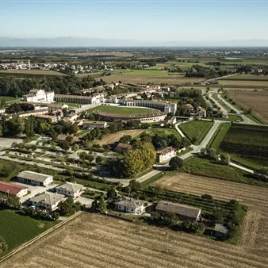

dom 18 ott
Treno storico Fiera di San Simone 2026
Locomotiva elettrica con carrozze anni '30 "Centoporte" e bagagliaio Treno da Trieste a Codroipo correlato alla Fiera di San Simone a Codroipo: una kermesse all’insegna del gusto e della tradizione in cui Codroipo si mette in mostra con le sue associazioni, le Pro Loco e le…
 Indicazioni
Indicazioni
- Costi e prenotazioni
- Costo non indicato · Prenotazione non indicata
- Programma
- Programma da verificare. Apri la fonte ufficiale per orari e possibili aggiornamenti.
- In caso di maltempo
- Nessuna indicazione specifica pubblicata.
- Note
- Acquisito automaticamente dalla fonte.
L’EVENTO
Descrizione completa
Locomotiva elettrica con carrozze anni '30 "Centoporte" e bagagliaio
Treno da Trieste a Codroipo correlato alla Fiera di San Simone a Codroipo: una kermesse all’insegna del gusto e della tradizione in cui Codroipo si mette in mostra con le sue associazioni, le Pro Loco e le eccellenze enogastronomiche e commerciali del territorio. Visite guidate e accesso ai musei Civico delle Carrozze d'epoca di S. Martino di Codroipo e Villa Manin di Passariano inclusi senza costi aggiunti esclusivamente per i possessori del titolo di viaggio.
Per informazioni sul treno storico:
INFOPOINT TOLMEZZO
Tel. +39 0433 44898
Cell. +39 335 7747958
info.tolmezzo@promoturismo.fvg.it
Programma di dettaglio e attività
Treno da Trieste a Codroipo correlato alla Fiera di San Simone le cui radici affondano in un passato contadino quando da tutto il Friuli Venezia Giulia si arrivava a Codroipo per partecipare al più importante mercato del bestiame della regione. I passeggeri del treno storico avranno l’occasione di prendere parte a una kermesse all’insegna del gusto e della tradizione in cui Codroipo si mette in mostra con le sue associazioni, le Pro Loco e le eccellenze enogastronomiche e commerciali del territorio; potranno inoltre scoprire la storia e il patrimonio artistico conservato nel Museo Civico delle Carrozze d'epoca di S.Martino di Codroipo e a Villa Manin di Passariano . Durante il viaggio in treno e in Stazione ferroviaria informazioni e approfondimenti di storia, tecnica e cultura ferroviaria a cura dell’Associazione Museo Stazione Trieste Campo Marzio.
Itinerario guidato alla scoperta della storia e del patrimonio artistico conservato nel Museo Civico delle Carrozze d'epoca di S. Martino di Codroipo e a Villa Manin di Passariano (con il supporto di bus navette TPL FVG per raggiungere le sedi oggetto di visita):
orario: 15.30-18.00
Punto di partenza/ritorno: partenza alle ore 15.30 con navette TPL FVG da stazione autocorriere Via Cesare Battisti (adiacente Stazione FS; a 500 mt a piedi dalla sede della Festa di San Simone)
Dettagli sulle visite Guidate : Punto di partenza/ritorno con navette TPL FVG alle ore 15.30 da stazione autocorriere Via Cesare Battisti (adiacente Stazione FS; a 500 mt a piedi dalla sede della Festa di San Simone)
I passeggeri verranno divisi in due gruppi che si alterneranno nelle visite con il seguente orario: Gruppo 1 _ (max 120 persone) _ 15.45 – 17.00 Villa Manin; 17.15-18.00 Museo delle Carrozze Gruppo 2_ (max 120 persone) _ 15.45- 16.15 Museo delle Carrozze; 16.30- 18.00 Villa Manin
Le visite guidate e i transfer in navetta sono inclusi senza costi aggiunti per i passeggeri del treno storico .
Le guide turistiche attenderanno i partecipanti direttamente davanti a Villa Manin e al Museo delle Carrozze .
19:15- 19:45 approfondimenti di storia, tecnica e cultura ferroviaria a cura dell’Associazione Museo Stazione Trieste Campo Marzio c/o Stazione Ferroviaria di Codroipo
Dettagli sul Pranzo: Pranzo libero alla festa di San Simone con ampia selezione di stand enogastronomici o per chi lo preferisse nei ristoranti di Codroipo previa prenotazione nei giorni precedenti
Dettagli sulla Fiera di San Simone: Dal mattino, vie e piazze del Centro Stand e chioschi aperti Mostra mercato- A cura di Consorzio Ambulanti del Friuli Venezia Giulia, in collaborazione con Omael Planner Dalle ore 9.00, Area Giardini Pubblici Festa finale di “Vola Alto con lo Sport” Attività sportive con le scuole del territorio e aperte a tutti - A cura del CONI FVG, ASD Polisportiva Codroipo, ASD Atletica 2000 e associazioni sportive del territorio Ore 10.00 – 12.00 e 14.30 – 16.30, Giardino Pubblico, piazza Giardini Pubblici Battesimo della sella con cavalli e pony Attività ludica propedeutica all’equitazione- A cura della Fattoria didattica “Al Casale” di Codroipo e Amici del cavallo di Bertiolo Dalle ore 9.00 alle ore 19.00, Sede Gruppo ANA Codroipo (via Circ. Sud 92/A) 45^ Mostra Micologica- A cura del Gruppo Micologico Codroipese Ore 11.30, Spazio Terra di Acque Architetture per l'educazione della gioventù- Presentazione del volume del Progetto Integrato Cultura Ore 12.30, Bar Caffè Centrale Aperitivo Beat Con la musica dal vivo dei Beat Factor Ore 14.00, Ai piedi del campanile Raduno vespa e lambrette Ore 14.00 iscrizioni, ore 15.00 partenza giro con sosta ristoro in cantina, ore 16.30 rientro in piazza a Codroipo per mostra statica e concerto swing. Info Marco (3474330146) – Luca (3492995760)- A cura di Vespa Club Insetti Scoppiettanti e Lambretta Club Friuli Ore 16.00, Duomo La Pieve di S. Maria Maggiore Visita guidata al Duomo di Codroipo, accompagneranno Ivan Bettuzzi, Giuliana Morsanutto e Alessandra Bressan-Ingresso libero, appuntamento all'ingresso del Duomo all'ora stabilita Ore 17.00, Ai piedi del campanile-Concerto della Abbey Town Jazz Orchestra Ore 18.00, Spazio Terra di Acque Ricette della Terza Terra per un Convivio Post-Antropocentrico Presentazione del ricettario e libro d’artista edito da UNPLI FVG APS-Comitato Regionale Pro Loco Con la partecipazione dell’autrice, l’artista Tiziana Pers, della curatrice gastronomica delle ricette Serena De Prophetis, del coordinatore editoriale Antonio Tesolin e del Presidente UNPLI FVG Pietro De Marchi
Il treno storico partirà dalla Stazione FS di Codroipo alle ore 19.45
INFORMAZIONI DI SERVIZIO AI PASSEGGERI:
Dalla Stazione Fs di Codroipo la Festa di San Simone è facilmente raggiungibile con un breve percorso a piedi.
Per i passeggeri che desiderino partecipare alle Visite guidate al Museo Civico delle Carrozze d'epoca di S. Martino di Codroipo e a Villa Manin di Passariano il punto di ritrovo è alle 15.30 presso la stazione autocorriere in Via Cesare Battisti (adiacente Stazione FS; a 500 mt a piedi dalla sede della Festa di San Simone). La partenza da Villa Manin/ Museo delle Carrozze per la stazione Autocorriere di Codroipo è previsto per le ore 18.00.
Orari del treno
Orari: TRIESTE CENTRALE 09:03 MONFALCONE 09:34 GORIZIA CENTRALE 10:03 UDINE 10:38 CODROIPO 10:57
RITORNO
CODROIPO 19:45 UDINE 20:06 GORIZIA CENTRALE 20:40 MONFALCONE 21:10 TRIESTE CENTRALE 21:38
Tariffe:
Andata e ritorno in treno storico
Adulti 10€;
Ragazzi (dai 4 ai 12 anni non compiuti) 5€;
Bambini (dai 0 ai 4 anni non compiuti) gratis senza riservazione del posto a sedere
BIGLIETTI IN VENDITA DAL 19 SETTEMBRE
Biglietti in vendita attraverso tutti i canali Trenitalia: www.trenitalia.com • biglietterie e self-service di stazione • agenzie di viaggio abilitate.
IL PROGRAMMA
Programma e orari
Appuntamenti raccolti dalle fonti elencate. Dove manca un orario, non è ancora disponibile in questa scheda.
Programma pubblicato
- 19:15- 19:45 approfondimenti di storia, tecnica e cultura ferroviaria a cura dell’Associazione Museo Stazione Trieste Campo Marzio c/o Stazione Ferroviaria di Codroipo
- Ore 11.30, Spazio Terra di Acque Architetture per l'educazione della gioventù- Presentazione del volume del Progetto Integrato Cultura
- Ore 12.30, Bar Caffè Centrale Aperitivo Beat Con la musica dal vivo dei Beat Factor
- Ore 14.00, Ai piedi del campanile Raduno vespa e lambrette
- Ore 17.00, Ai piedi del campanile-Concerto della Abbey Town Jazz Orchestra
- Ore 18.00, Spazio Terra di Acque Ricette della Terza Terra per un Convivio Post-Antropocentrico
INFORMAZIONI UTILI
Prima di partire
- Controllare la fonte prima di partire.
ORGANIZZAZIONE